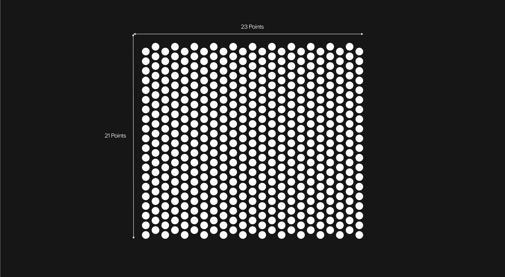
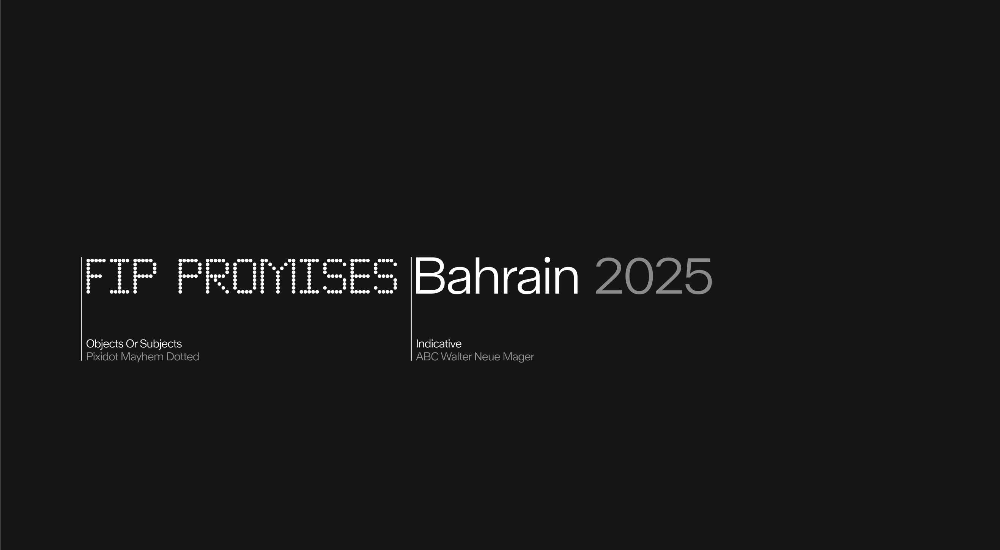
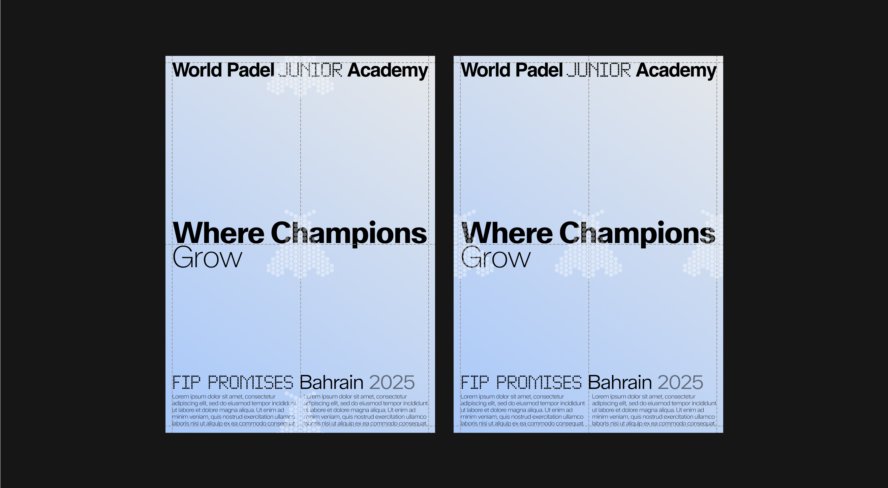
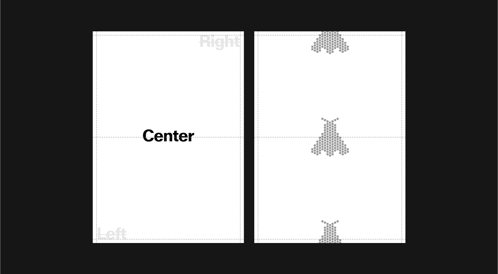

WPA Junior Academy
All pictograms for each level of the Academy are constructed on the same grid. This ensures consistency across the system while allowing each level to be distinguished by its unique graphic expression.
As described in the graphic device, the same grid used for signage is applied here. The only difference lies in a subtle vertical offset within the composition, which introduces a sense of movement and dynamism.
WPA Academy Logo and Icons
Grid
The grid is defined by a fixed number of points both vertically and horizontally. Its structure shifts subtly to create rhythm and balance within the composition. This approach ensures that layouts remain structured yet flexible, providing consistency across all brand applications.
Construction
The grid is built on a modular 1:1 ratio.
Each unit follows a square structure, but with a deliberate 10% offset from the center. This shift introduces a more organic and dynamic quality, reflecting the Academy's spirit and the growth of its players.
Family
From Fly (Ages 3-7) to Falcon (Ages 8-14),
The icons evolve alongside the players, reflecting their journey through the Academy. At the earliest stage, the Fly symbolizes catching the “bug” of the sport. Discovering padel with curiosity and enthusiasm. As players grow, the Falcon represents the next step: developing the skills, strength, and confidence needed to master the game. Together, these icons embody progression, growth, and ambition within the Academy pathway.
Icon Misuse
The Academy icons are built on a precise grid system, and their design must remain consistent across all applications. They should never be altered, decorated, or manipulated in any way that could compromise their clarity or meaning.
Wordmark
Overview
The Academy wordmark follows the same construction principles as the primary WPA wordmark. Using the dot system, it is precisely aligned to the mid-height of the capital letters to ensure balance and harmony. This approach creates a distinct sub-family within the Academy while maintaining strong recognition across the overall identity system.
Clearspace
When using the World Padel Junior Academy wordmark, always maintain sufficient clear space to ensure visibility and impact. This protected area must remain free of text, imagery, or any other graphic elements. The minimum clear space is defined as 100% of the wordmark’s height and should scale proportionally across all applications. Exceptions apply only within approved lock-up configurations.

Wordmark - Alternative - Misuse
The World Padel Junior Academy wordmark must always remain consistent and uncompromised. It should never be altered, distorted, decorated, or combined with effects that reduce legibility. Below are examples of incorrect applications to avoid in every instance.
WPA Academy System
System
Type Construction
The dot typography bridges the Academy and the signage system, creating a unified but distinct visual language. Within the Academy, it introduces rhythm and playfulness, while in signage it ensures clarity and structure.
This dual role allows the dot system to separate functions while keeping the overall identity cohesive and instantly recognizable.
System
Type Construction
The dot typography bridges the Academy and the signage system, creating a unified but distinct visual language. Within the Academy, it introduces rhythm and playfulness, while in signage it ensures clarity and structure.
This dual role allows the dot system to separate functions while keeping the overall identity cohesive and instantly recognizable.
Icons
Placement
The vertical frieze is the most global and consistent way to apply the icons, placing them along the central axis at the top, center, and bottom with equal spacing. This approach ensures strong rhythm and recognition across all formats.
In certain cases, depending on the format, the system may also be applied horizontally while maintaining the same spacing principles.
Application Example
Academy Icons
Misuse
The Academy icons are designed with a strict system to ensure clarity, consistency, and recognition across all applications. To preserve their integrity, icons must not be altered, distorted, or combined in ways that compromise their structure. Below are common misuses to avoid.
WPA Academy Colors
Setup
WPA Academy icons must always be placed in the foreground, above all other layers in the composition. They should never be used at 100% opacity: always apply them in white, set to 40% opacity, to maintain lightness and elegance. The only exception is when the background or imagery is too light, in which case the color may be adjusted to ensure visibility while staying true to the system.

Specific Rules
In most cases, Academy icons should be applied in white at 40% opacity to ensure consistency and readability. However, when the background is too bright and visibility is compromised, icons may be applied in black at 40%. This alternative should only be used when strictly necessary.
 Icon applied in black at 40% opacity to remain visible on a light background. Use this option only when white loses legibility.
Icon applied in black at 40% opacity to remain visible on a light background. Use this option only when white loses legibility.
 Icon applied in black at 40% opacity to remain visible on a light background. Use this option only when white loses legibility.
Icon applied in black at 40% opacity to remain visible on a light background. Use this option only when white loses legibility.
Specific Rules
When working with images that contain multiple levels of contrast, always base the application of icons on the dominant brightness of the composition. If the overall background is too dark and risks reducing visibility, apply a subtle white layer at 10% opacity on top. This adjustment ensures that the image remains lighter, creating enough clarity for icons and text.

Misuse
The Academy icons must remain simple and consistent to preserve their clarity and recognition. Do not alter their colors, add gradients, or apply solid fills. Icons should always be used in white at 40% opacity on both light and dark backgrounds, ensuring maximum visibility and alignment with the brand system.
WPA Academy Scale - Alignment and Position
Position
The icons must always be placed in the center of the composition to ensure balance and consistency across all formats. This central placement reinforces the identity system and creates a strong, recognizable visual language.
Scale - Horizontal Format
The size of the icons is always determined in relation to the header, based on the height of the capital letters in the largest type used within a format. This ensures a coherent and proportional relationship between text and icon across all applications.
In elongated horizontal formats, icons may be scaled up to 2x the capital height to maintain visibility and balance.
Scale - Vertical Format
The size of the icons is always determined in relation to the header, based on the height of the capital letters in the largest type used within a format. This ensures a coherent and proportional relationship between text and icon across all applications.
In vertical formats, icons should be scaled up to 3x the capital height to ensure presence and impact.
Scale - Misuse
The icons have been designed with precise proportions to ensure clarity and balance within the system. Any alteration to their scale can disrupt legibility and weaken the visual identity. Always respect the established size rules and avoid the following misuses.
WPA Application Examples